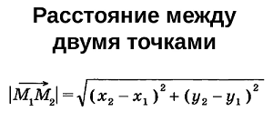
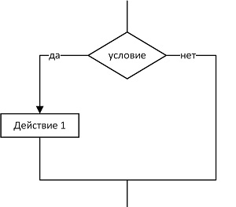
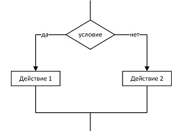
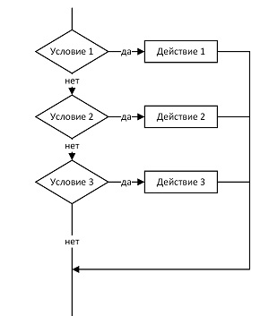
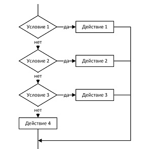

Основы программирования на PHP
Оглавление
- Первый скрипт Hello World на PHP
- Конец строки
- Комментарии
- Подключение файла
- Переменные и типы данных
- Целые и вещественные числа
- Логический и строковый тип данных
- Базовые функции языка
- Явное и неявное приведение типов
- Округление чисел
- ООП: Классы и объекты
- Области видимости переменных класса
- Расстояние между двумя точками
- Константы
- Путь к файлу, константы класса
- Конкатенация строк
- Арифметические операторы
- Поразрядные операторы
- Операторы сравнения
- Условный оператор if
- Логические операторы
- Тернарный условный оператор, ??, goto
- Переключатель switch
- Чтение из файла и запись в файл
- Цикл while
- Цикл do while
- Цикл for
- Массивы
- Ассоциативные массивы
- Многомерные массивы
- Интерполяция элементов массива в строки
- Конструкция list
- Обход массива циклом for и foreach
- Слияние и сравнение массивов
- Проверка существования и удаление элементов массива
- Задачи на понимание массивов
- Функции
- Параметры и аргументы функций
- Глобальные и статические переменные
- Рекурсия, вложенные и анонимные функции
- Замыкания и задачи на понимание функций
- Работа со строками
- Работа с подстроками
- Функции для работы с HTML
- Форматный вывод
- Работа с JSON
- Передача параметров методом GET
- Передача параметров методом POST
- Работа с элементами формы checkbox, radio, select
- Загрузка файлов на сервер
- Форма обратной связи, отправка письма на почту
- Методы класса
- Конструктор класса
- Наследование и перегрузка методов
- abstract и final классы и методы
- Полезные материалы
1. Первый скрипт на PHP
Расширение файлов .php
<?php ?> - php тег
echo - для вывода на экран
2. Конец строки
Конец строки отделяется спомощью точки с запятой.
<?= "Текст"; ?> сокращенный тег php
тоже самое что и <?php echo "Текст"; ?>
3. Комментарии
# Однострочный комментарий в стили Python
// Однострочный комментарий (классический)
/*
Многострочный
комментарий
*/
Комментарии нужны только для программиста.
В VS Code можно закоментировать выделенный код с помощью CTRL + /
4. Подключени файла
include 'каталог/файл.php'; require 'каталог/файл.php'; Код5. Переменные и типы данных
Переменная всегда начинается знаком доллара, например $var = 5;
Названия переменных на php чувствительны к регистру.
6. Целые и вещественные числа
10 - DEC Число
-10 - Отрицательное DEC число
012 - OCT числа
0x12A - HEX числа
5.631 - Вещественное число
5.0e-3 - 5.0*10^-3
5.0e+3 - 5.0*10^+3
7. Логический и строковый тип данных
true и false - можно записывать в любом регистре
Строки записываются в ковычках, например $str = "Строка";
8. Базовые функции языка
isset() - Определяет, была ли установлена переменная значением, отличным от null empty() - Проверяет, пуста ли переменная gettype() - Возвращает тип переменной is_int() - Проверяет, является ли переменная целым числом Код9. Явное и неявное приведение типов
| Значение | Описание |
| $var = (int) $var; | Приведение к целому типу int |
| $var = (integer) $var; | Приведение к целому типу int |
| $var = (bool) $var; | Приведение к логическому типу boolean |
| $var = (boolean) $var; | Приведение к логическому типу boolean |
| $var = (float) $var; | Приведение к вещественному типу double |
| $var = (double) $var; | Приведение к вещественному типу double |
| $var = (real) $var; | Приведение к вещественному типу double |
| $var = (string) $var; | Приведение к строковому типу string |
| $var = (array) $var; | Приведение к массиву |
| $var = (object) $var; | Приведение к объекту |
10. Округление чисел
is_numeric() - Проверяет, является ли переменная числом или строкой, содержащей число round() - Округляет число типа float floor() - Округляет дробь в меньшую сторону ceil() - Округляет дробь в большую сторону decbin() - Переводит число из десятичной системы счисления в двоичную Код11. ООП: Классы и объекты
unset() - Удаляет переменную Код12. Области видимости переменных класса
public - Переменная доступна везде
private - Переменная доступна только в классе
protected - Доступ имеется из класса, унаследованных классов и родительских
static - Статическая переменная
 Области видимости
Код
Области видимости
Код
13. Расстояние между двумя точками
clone $var; - Клонировать объект, а не указывать на него ссылку
 pow() - Возведение в степень sqrt() - Квадратный корень Код14. Константы
define() - Определяет именованную константу defined() - Проверяет существование указанной именованной константы constant() - Возвращает значение константы Магические константы Код15. Путь к файлу, константы класса
require_once() - проверит, включался ли уже данный файл, и если да, не будет включать его еще раз Код16. Конкатенация строк
echo() - Выводит одну или более строк Код17. Арифметические операторы
| + | Сложение |
| - | Вычитание |
| * | Умножение |
| / | Деление |
| ** | Возведение в степень |
| % | Остаток от деления |
| ++ | Инкремент |
| -- | Декремент |
18. Поразрядные операторы
 Код
Код
19. Операторы сравнения
Приоритеты выполнениря операторов в PHP Код20. Условный оператор if
if(условие) {
// действие
} elseif(условие) {
// действие
} else {
// действие
}
Блок схемы для условных конструкций
|  |  |
|  |  |
21. Логические операторы
 Код
Код
22. Тернарный условный оператор, ??, goto
выражени1 ? выражение2 : выражение3
Код23. Переключатель switch
switch(проверка) {
case значение1:
выражение
...
break;
case значениеN:
выражение
...
break;
default:
выражение
...
}
Код